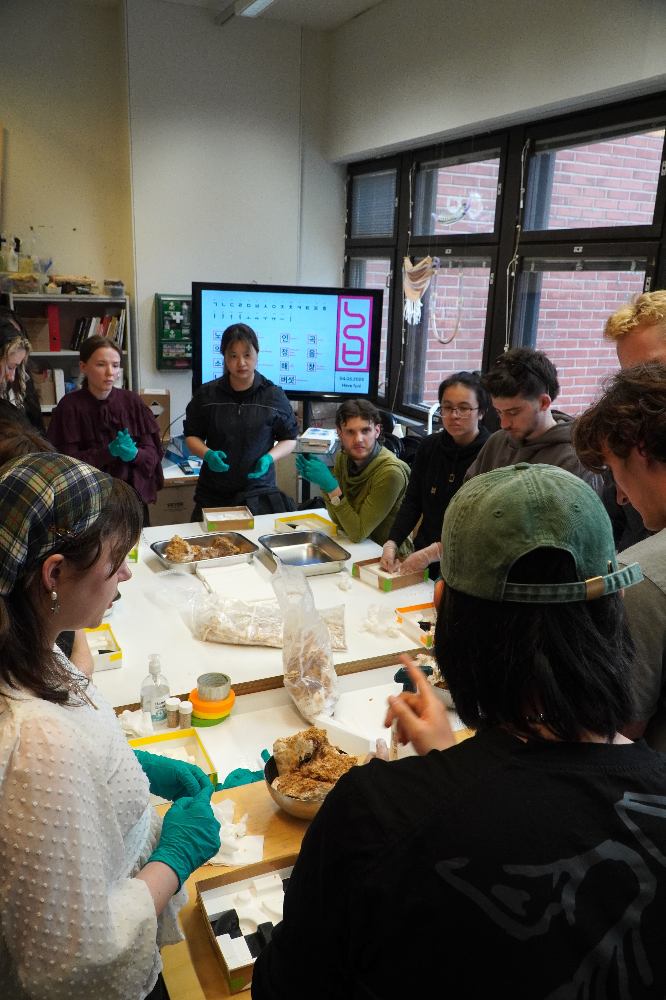
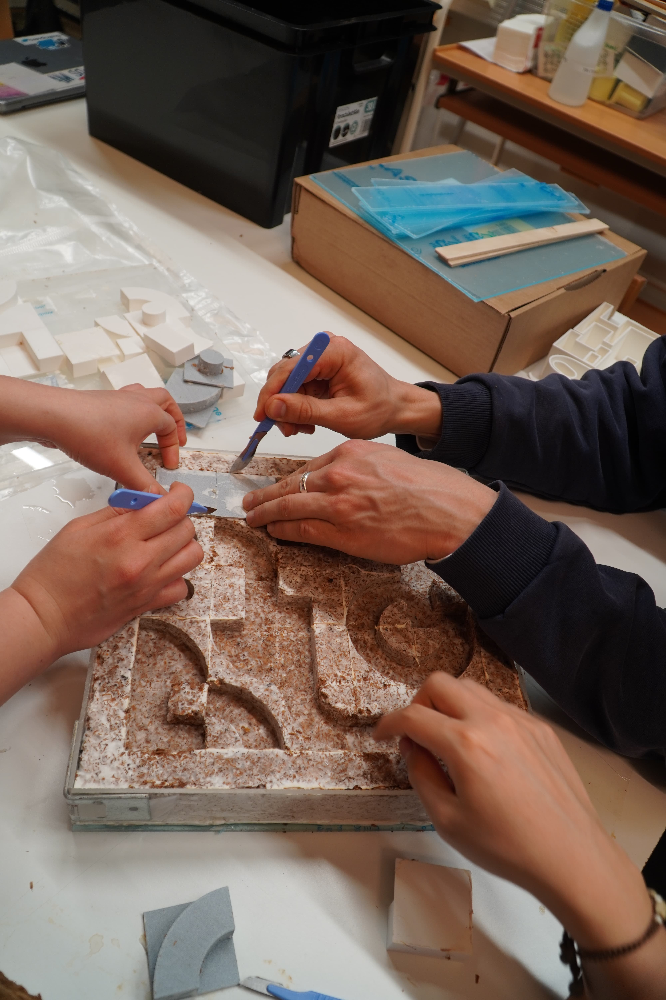
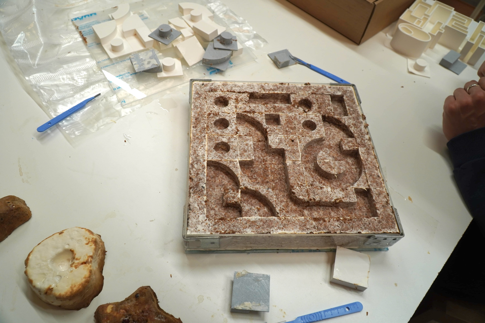
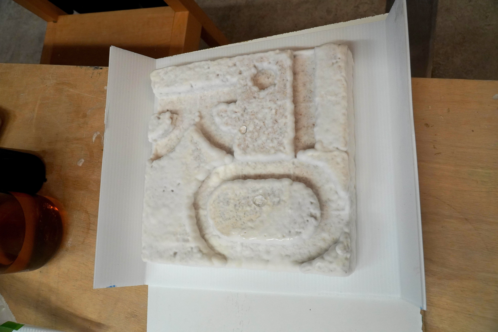

Noraebang is an ongoing project where we are building a noraebang (노래방, or Korean karaoke booth) using participatory design and bio-based materials.
9000 Euros were funded for this project by Sustainability Action Booster. The project is also sponsored by Singa, a karaoke startup in Finland, in addition to supported by BioMakers Lab.
I am participating in this project as co-producer, writer, and core team member.


Noraebang created from converted Finnish sauna and soundproofed using bio-materials like wood fiber foam and mycelium. The mycelium panels were created through three separate particiaptory design workshops, involving over 50 participants from Helsinki, Espoo, Lahti, and beyond.
Mycelium panels were designed using Korean typographic design tiles that we created and 3d printed. Once each participant designed their own tile and molded mycelium onto it, mycelium were grown and dried for multiple weeks led by Harvey Shaw, mycelium researcher at Aalto University.


We are still working on soundproofing noraebang. It is expected to open in Abloc building right above the Aalto University metro station in late August.
Noraebang is part of A Design for a Cooler Planet Exhibition and Helsinki Design Week 2026.